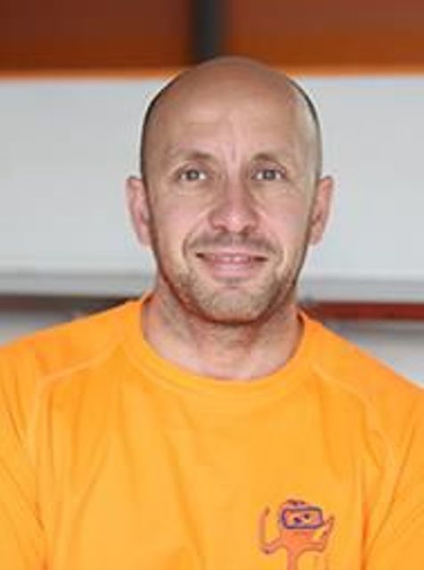

Vicente Gil Rós
"Tito Gilito"
Especialidad: Natación adaptada - braza
Edad: 49 años
Club: CD Aquatic Campanar
Biografía
Vicente es un nadador paralímpico español nacido el 5 de enero de 1976 en Carpesa, Valencia. Compite en la clase SB3, destinada a deportistas con discapacidad física moderada. Su carrera deportiva se inició tras un accidente de tráfico que le llevó a la natación como método de rehabilitación, encontrando en este deporte una vía para superar barreras y establecer nuevas metas
Logros Deportivos
- Juegos de Sídney 2000:🥇 en 4x50 metros estilos.
- Juegos de Atenas 2004: Plata en 50 metros braza SB3
- Juegos de Pekín 2008: Plata en 50 metros braza SB3 y bronce en 4x50 metros estilos.